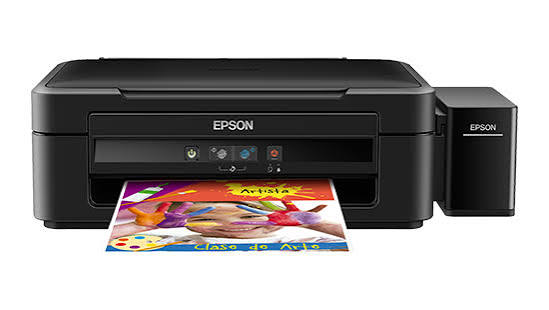
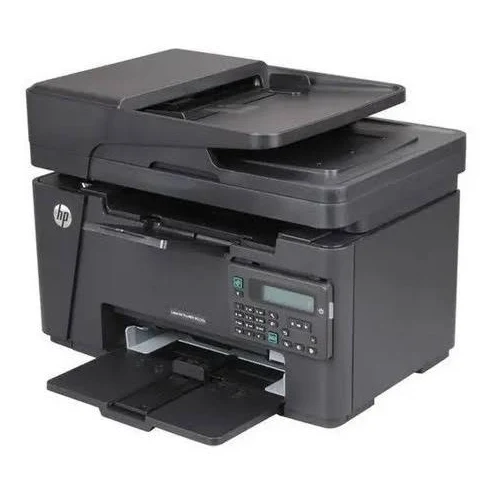
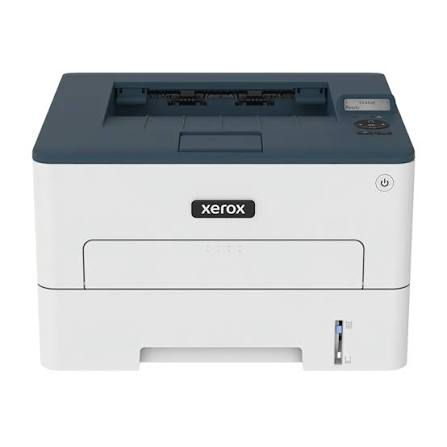
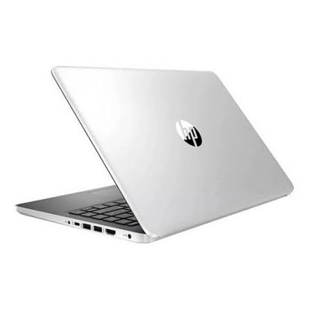
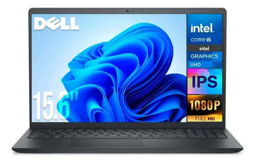
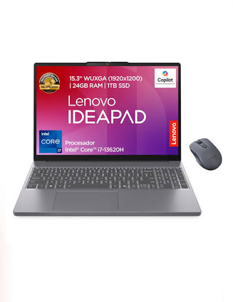
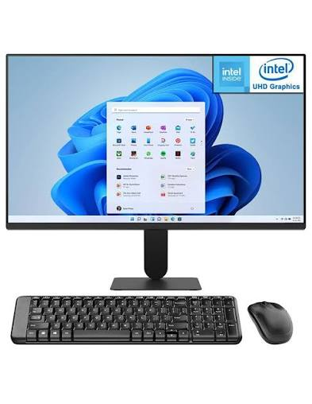
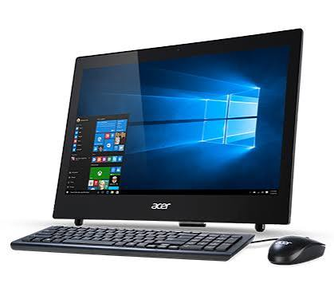
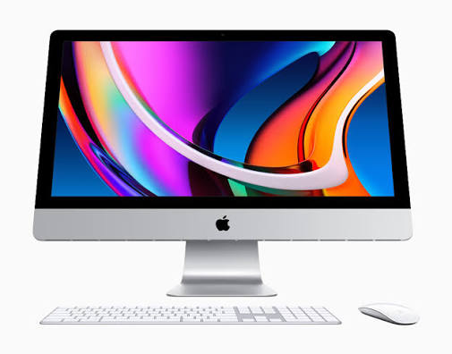
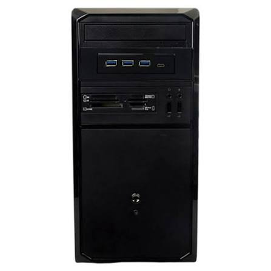

El mejor lugar para dar mantenimiento a tus dispositivos










| Servicio | Precio |
|---|---|
| Diagnóstico o revisión básica | $250 – $600 MXN |
| Limpieza interna y mantenimiento preventivo | $400 – $900 MXN |
| Instalación o cambio de disco duro/SSD | $500 – $1,200 MXN |
| Instalación o cambio de memoria RAM | $350 – $900 MXN |
| Cambio de fuente de poder | $500 – $1,200 MXN |
| Mantenimiento correctivo o reparación de fallas | $600 – $1,500 MXN |
| Mantenimiento completo | Desde $850 MXN |
| Componente | Revisión |
|---|---|
| Disco duro y SSD | Revisión de estado y funcionamiento |
| Memoria RAM | Revisión de capacidad y funcionamiento |
| Procesador | Revisión de temperatura y rendimiento |
| Fuente de poder | Revisión de voltaje y funcionamiento |
| Tarjeta madre | Revisión de componentes y conexiones |
| Ventiladores | Limpieza y revisión de funcionamiento |
| Sistema operativo | Revisión, instalación y configuración |